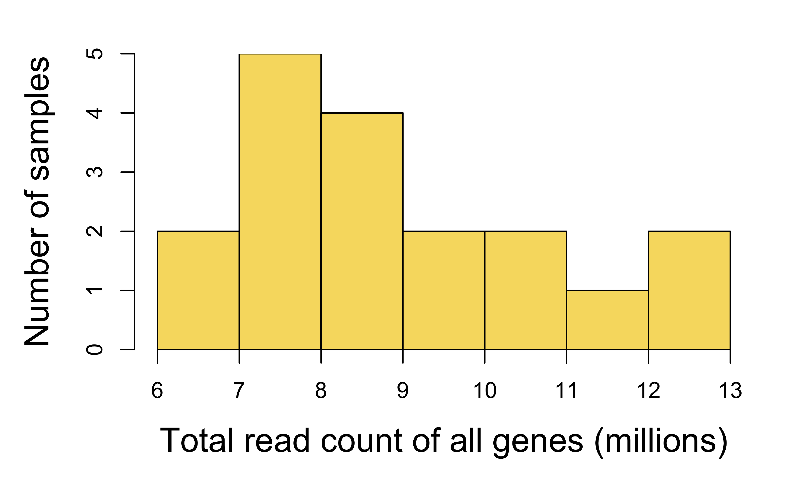
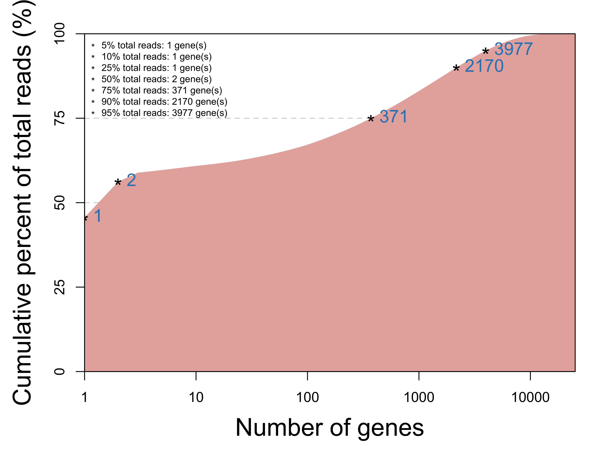
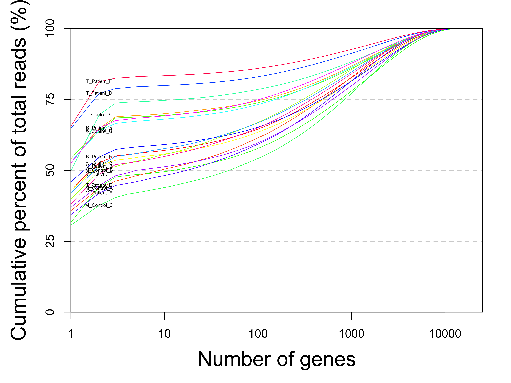
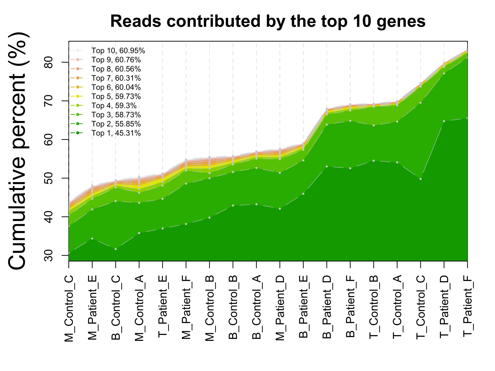
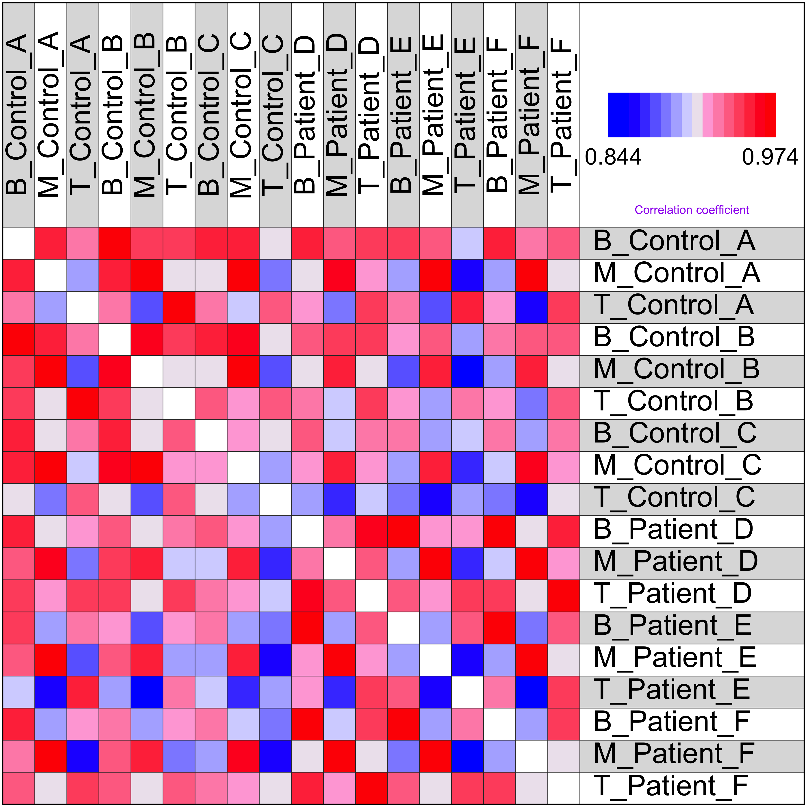

This procedure analyzes the read counts of multiple RNA-seq samples for quality control purposes. It ususally takes an integer matrix of gene-level read counts as input. It is a simplified version of the rnaseq_sample procedure, which also performs sample analysis based on the read count matrix. Instead, this procedure focuses only on the contents of the read count matrix itself.
Transcriptome in immune cells of control-patient samples
Rna-seq data was generated from of 3 types of immune cells of 3 controls and 3 patients. Raw data was processed to get gene-level read counts.
The total read counts of all genes are compared between RNA-seq samples. Shapiro-Wilk normality test shows that the total read counts of all samples is normally distributed (p = 0.21) in this data set.

Figure 1. Distribution of total read counts of all samples.
As genes have different length and expression level, reads are unevenly distributed across genes. Usually, a small portion of the genes contribute most of the total reads, while a large portion of the genes have no or few reads mapped to them

Figure 2. Genes are sorted by their total read counts of all samples, along the X-axis. The cumulative percentages of total reads contributed by the top genes are plotted along the Y-axis.

Figure 3. Same plot as the last one, but showing individual samples and their cumulative percent of read counts contributed by sorted genes.

Figure 4. The percent of total read counts per sample contributed by its top 10 genes. Samples are sorted by the percents from low to high along the X-axis. The cumulative percents of all samples are then compared to each other to identify samples with extremely lower or higher percents than the other samples:
Gene-specific dispersion of RNA-seq read counts is commonly used to evaluate between-sample variance of a data set. Here, the dispersion is estimated by the overall pattern of coefficient of variation (standard deviation devided by average read count) of all genes.
Figure 5. The dispersion of gene expression level between samples, measured as the coefficient of variation (CV). Genes with lower read counts have generally higher CV.
Similarity between samples can be evaluated by their correlation of read counts.

Figure 6. Correlation between all pairs of RNA-seq samples.
Figure 7. The two pairs of samples with the best and worst correlation of read counts.
Table 1. Sample summary.
| Total | Mean | Median | ZeroRead | Top10_Pct | Top_Gene | Nearest | Farthest | |
|---|---|---|---|---|---|---|---|---|
| B_Control_A | 10193126 | 404.38 | 6 | 8462 | 43.9 | RNR2 | B_Control_B | T_Patient_E |
| M_Control_A | 11035413 | 437.79 | 4 | 9288 | 48.1 | RNR2 | M_Control_B | T_Patient_E |
| T_Control_A | 8643786 | 342.91 | 5 | 8642 | 49.5 | RNR2 | T_Control_B | M_Patient_F |
| B_Control_B | 8648253 | 343.09 | 6 | 8275 | 50.4 | RNR2 | B_Control_A | T_Patient_E |
| M_Control_B | 12373914 | 490.89 | 4 | 9507 | 51.2 | RNR2 | M_Control_A | T_Patient_E |
| T_Control_B | 6446099 | 255.73 | 5 | 8549 | 54.9 | RNR2 | T_Control_A | M_Patient_F |
| B_Control_C | 7679538 | 304.66 | 6 | 8597 | 55.5 | RNR2 | B_Control_A | M_Patient_F |
| M_Control_C | 9619600 | 381.62 | 6 | 8578 | 55.7 | RNR2 | M_Control_A | T_Patient_E |
| T_Control_C | 6773444 | 268.71 | 3 | 9741 | 57.0 | RNR2 | T_Control_B | M_Patient_F |
| B_Patient_D | 8554657 | 339.38 | 4 | 8767 | 57.6 | RNR2 | B_Patient_F | T_Control_C |
| M_Patient_D | 7480648 | 296.77 | 3 | 9426 | 59.1 | RNR2 | M_Patient_F | T_Patient_E |
| T_Patient_D | 10217085 | 405.33 | 3 | 8671 | 68.0 | RNR2 | T_Patient_F | T_Control_C |
| B_Patient_E | 7323204 | 290.52 | 5 | 8970 | 69.2 | RNR2 | B_Patient_F | M_Control_B |
| M_Patient_E | 7520193 | 298.34 | 3 | 10105 | 69.3 | RNR2 | M_Patient_F | T_Patient_E |
| T_Patient_E | 7373900 | 292.53 | 4 | 9613 | 69.9 | RNR2 | T_Control_A | M_Patient_F |
| B_Patient_F | 9016678 | 357.71 | 3 | 9442 | 74.6 | RNR2 | B_Patient_D | T_Control_C |
| M_Patient_F | 8555748 | 339.42 | 3 | 8993 | 79.9 | RNR2 | M_Patient_D | T_Patient_E |
| T_Patient_F | 12075769 | 479.06 | 3 | 8245 | 83.3 | RNR2 | T_Patient_D | M_Control_B |
Check out the RoCA home page for more information.
To reproduce this report:
Find the data analysis template you want to use and an example of its pairing YAML file here and download the YAML example to your working directory
To generate a new report using your own input data and parameter, edit the following items in the YAML file:
if (!require(devtools)) { install.packages('devtools'); require(devtools); }
if (!require(RCurl)) { install.packages('RCurl'); require(RCurl); }
if (!require(RoCA)) { install_github('zhezhangsh/RoCAR'); require(RoCA); }
CreateReport(filename.yaml); # filename.yaml is the YAML file you just downloaded and edited for your analysisIf there is no complaint, go to the output folder and open the index.html file to view report.
## R version 3.5.1 (2018-07-02)
## Platform: x86_64-apple-darwin15.6.0 (64-bit)
## Running under: macOS High Sierra 10.13.6
##
## Matrix products: default
## BLAS: /System/Library/Frameworks/Accelerate.framework/Versions/A/Frameworks/vecLib.framework/Versions/A/libBLAS.dylib
## LAPACK: /Library/Frameworks/R.framework/Versions/3.5/Resources/lib/libRlapack.dylib
##
## locale:
## [1] en_US.UTF-8/en_US.UTF-8/en_US.UTF-8/C/en_US.UTF-8/en_US.UTF-8
##
## attached base packages:
## [1] parallel stats4 stats graphics grDevices utils datasets
## [8] methods base
##
## other attached packages:
## [1] gplots_3.0.1 DEGandMore_0.0.0.9000 snow_0.4-3
## [4] awsomics_0.0.0.9000 Rnaseq_0.0.0.9000 GenomicRanges_1.34.0
## [7] GenomeInfoDb_1.18.1 IRanges_2.16.0 S4Vectors_0.20.1
## [10] BiocGenerics_0.28.0 vioplot_0.3.0 zoo_1.8-4
## [13] sm_2.2-5.4 htmlwidgets_1.3 DT_0.5
## [16] yaml_2.2.0 kableExtra_0.9.0 knitr_1.20
## [19] rmarkdown_1.10 RoCA_0.0.0.9000 RCurl_1.95-4.11
## [22] bitops_1.0-6 usethis_1.4.0 devtools_2.0.1
##
## loaded via a namespace (and not attached):
## [1] httr_1.3.1 pkgload_1.0.2 jsonlite_1.5
## [4] viridisLite_0.3.0 gtools_3.8.1 shiny_1.2.0
## [7] assertthat_0.2.0 highr_0.7 GenomeInfoDbData_1.2.0
## [10] remotes_2.0.2 sessioninfo_1.1.1 pillar_1.3.0
## [13] backports_1.1.2 lattice_0.20-38 glue_1.3.0
## [16] digest_0.6.18 promises_1.0.1 XVector_0.22.0
## [19] rvest_0.3.2 colorspace_1.3-2 htmltools_0.3.6
## [22] httpuv_1.4.5 pkgconfig_2.0.2 zlibbioc_1.28.0
## [25] xtable_1.8-3 scales_1.0.0 gdata_2.18.0
## [28] processx_3.2.0 later_0.7.5 tibble_1.4.2
## [31] withr_2.1.2 cli_1.0.1 magrittr_1.5
## [34] crayon_1.3.4 mime_0.6 memoise_1.1.0
## [37] evaluate_0.12 ps_1.2.1 fs_1.2.6
## [40] xml2_1.2.0 pkgbuild_1.0.2 tools_3.5.1
## [43] prettyunits_1.0.2 hms_0.4.2 stringr_1.3.1
## [46] munsell_0.5.0 callr_3.0.0 compiler_3.5.1
## [49] caTools_1.17.1.1 rlang_0.3.0.1 grid_3.5.1
## [52] rstudioapi_0.8 crosstalk_1.0.0 base64enc_0.1-3
## [55] R6_2.3.0 rprojroot_1.3-2 KernSmooth_2.23-15
## [58] readr_1.2.1 desc_1.2.0 stringi_1.2.4
## [61] Rcpp_1.0.0END OF DOCUMENT
{kind=link}
{kind=link}
{kind=link}
{kind=link}
{kind=link}
{kind=link}
{kind=link}
{kind=link}
{kind=link}
{kind=link}
{kind=link}
{kind=link}
{kind=link}
{kind=link}
{kind=link}
{kind=link}
{kind=link}
{kind=link}
{kind=link}
{kind=link}
{kind=link}
{kind=link}
{kind=link}
{kind=link}
{kind=link}
{kind=link}
{kind=link}
{kind=link}
{kind=link}
{kind=link}
{kind=link}
{kind=link}
{kind=link}
{kind=link}
{kind=link}
{kind=link}